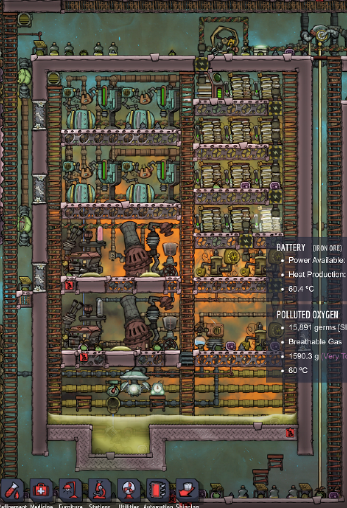
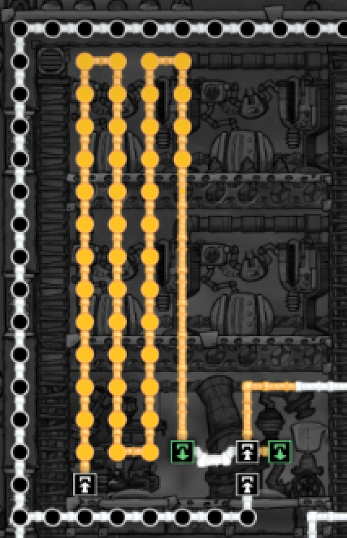
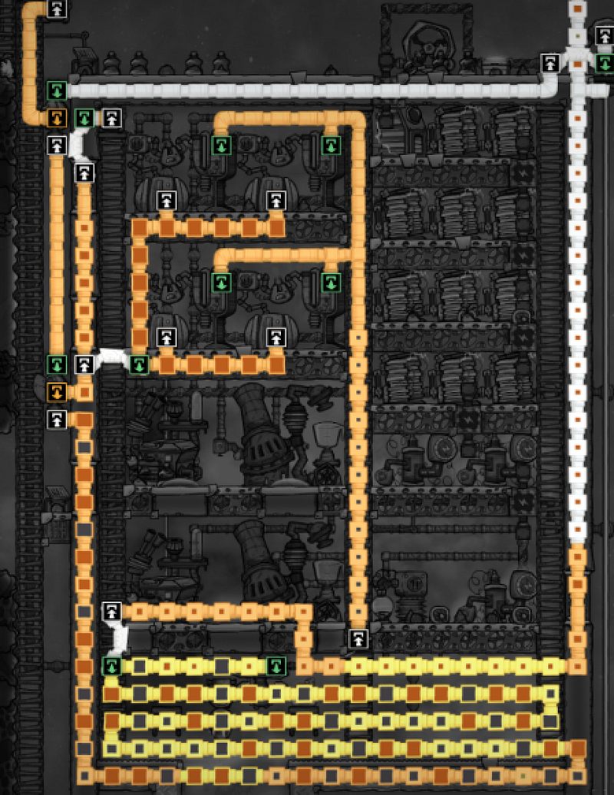
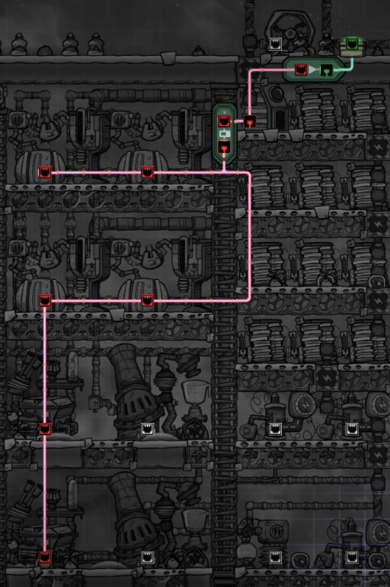
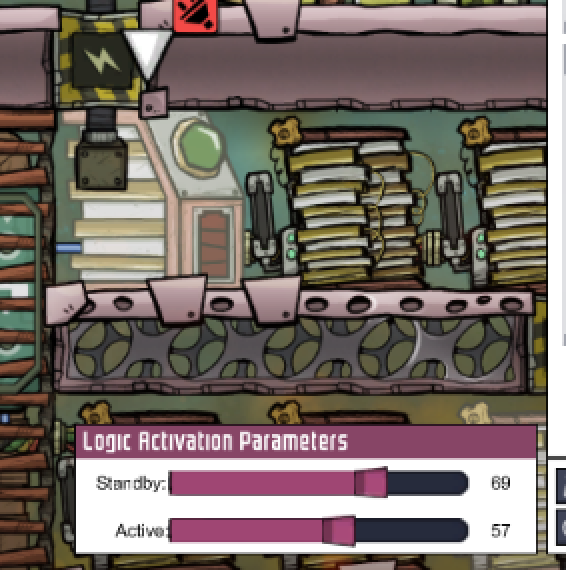
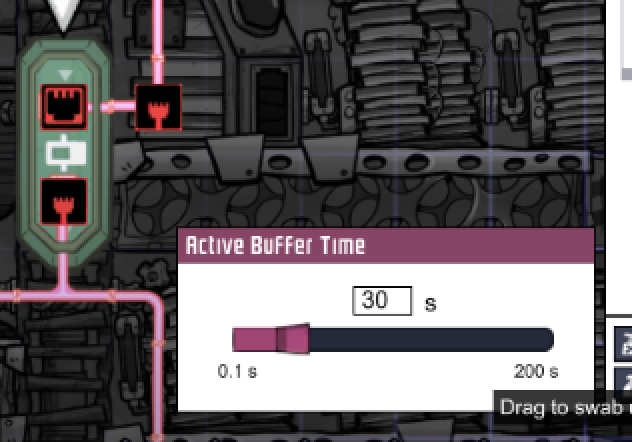
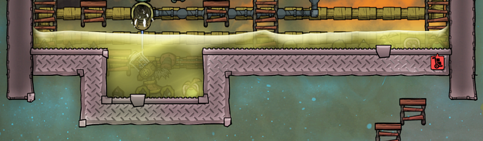

Building A Petroleum Power Plant
Building A Petroleum Power Plant
So I actually had never played Oxygen Not Included for over 200 cycles without cheating.
I mean, when you have life with three kids, you don’t have time for fair play in this kind of game….
However, this week I got sick, and had enough concentration to play a few hours of games while the kids were away, so I went and did things “The Right Way” on Cosmic Upgrade.
One thing that I really wanted to create was a semi-perpetual energy source in the form of Natural Gas Generator and Petroleum Generator. So I went and created it.

I honestly don’t know if this is at all efficient — actually, it probably isn’t — but here are a few things that I found proved to be problematic and thus eye-opening at the same time. Below are my findings.
You Need Energy To Produce Energy
On sheet it looks as though an Oil Refinery produces enough Natural Gas to pump a Natural Gas Generator.
But The problem is that the oil refinery itself needs quite a lot of power, so in order to generate enough natural gas, you need to have enough power to sustain the Oil Refinery for an extended amount of time… which you don’t. You need to generate more power to generate some more power!
This is obviously unless you use another type of generator. Manual Generators don’t produce enough, and coal generators are out because, at this point in the game, coal is starting to be a scarce commodity.
When I realized this, I regretted that I thought the Natural Gas Generators could be the main energy source for the Oil Refineries. Turns out they should be treated as auxiliary energy sources, to eliminate the Natural Gas by-product.
In Search Of The Primary Energy Source
So the obvious answer is, use the petroleum that is being generated to pump the Petroleum Generator! The Petroleum Generator produces so much more energy than anything in this game, and can fill up those batteries in matter of few seconds.
Once I connected the Oil Refineries to the Petroleum Generators, I expected things to just be peachy from there on. But again, I had missed one crucial fact, which is that Oil Refineries requires duplicant operation.
That means they can only be enabled during the presence of a duplicant, and that means you need to have enough reserve petroleum to pump the Petroleum Generators if the battery goes low while the duplicants are away, either at night or because they are busy doing something else.
One way, I guess, would be to pump out the petroleum into a pool and pump right back from it, but that seemed like it required more pipes and more power, and I also really like to make systems self-contained. So I decided to create a long enough pipeline within the power grid to hold enough petroleum buffer. Before this, my pipes were going directly from the Oil Refinery to the Petroleum Generator, which was about 3 units of pipes worth.

I made the pipes long enough so that it holds an extended amount of petroleum, which means that the Oil Refinery can sustain itself while the duplicants are away. Once the power generation stabilizes, I guess it makes more sense to draw the petroleum from a pool, but we were in a race against the end of coal supply.
One thing to note is the use of Liquid Bridge from the Oil Refinery’s output. This forces the contents to go to the bridge first, and when the bridge side is blocked, any excess would flow towards the other end, leading to a pool.
Handling Excess Gas
The gases… Well, I definitely could’ve done better. But here’s what I got right now.
The line of pipes to the right comes from a nearby Natural Gas Geyser. I thought this would help run the Natural Gas Generators better, but I probably don’t need it. Instead I should create a separate, auxiliary power plant using Natural Gas.
There’s a single Gas Pump towards the bottom of the system. The air goes into a labyrinth of pipes, which I initially thought I could use to to take away some of the heat, but as I describe later, it hasn’t really been effective.
Then the gases flow clock-wise, and the first Gas Filter filters out Natural Gas to pump the Natural Gas Generators. Excess natural gas must be re-introduced to the system, or otherwise the entire air system might stop.
The next filter takes out Oxygen, and pipes it to the outside. This filter can probably be removed once the system contains no Oxygen. The remaining gas, which is mostly Carbon Dioxide, is then sent out of the system towards the right, and it gets treated separately. The Carbon Dioxide is going to be used for feeding Slicksters (but I haven’t gotten to that point yet)

Controlling The Generation of Power, and Use of Excess Power
Now that we have enough power generation, next step is to control the generation thereof, and then its usage. Ultimately, we want to use power that is generated from this system to power other areas in the base, but we also want to make sure that we retain enough energy within the system so that it can sustain itself producing power.
The main driving switch for this operation will be the Smart Battery. The Smart Battery will let us know when it thinks it needs re-filling, and when it thinks it’s full.

On the output side, it’s straight forward. We have a line of Heavy Watt Wire, with a Shutoff Switch. The switch is directly connected to the Smart Battery with a Not Gate, so that energy flows outside when the Smart Battery thinks it’s full.
On the generator side, it’s a simple setup to trigger power generation when the Smart Battery thinks it needs re-filling, but I added a Buffer Gate, so that it generates power for a little bit longer after the Smart Battery says it has enough. This basically allows for a slightly smaller window of downtime for outgoing energy. In hindsight I think it would have been possible tune this further, so there’s almost no down time, but that’s as much patience as I had back then.


TODOs
I have a lot of TODOs. This system is far from optimal. Here are a couple of things I thought I wanted to do, but couldn’t for various reasons.
Separate Into Distinct Areas To Make Smaller Rooms
I should have separated Petroleum-based generation and Natural Gas-based generation in separate rooms. This in turn will create smaller rooms, which in turn means I would have been able to install a Power Control Station.
By the time I realized the room was too big, I was starting to run out of Coal, so I had to take what I had.
Controlling Excess Heat
One big problem that I still have is the handling of excess heat generated by the generators. I would use a Anti-Entropy Thermal Nullifier to cool down the petroleum, and have a line of Radiant Pipe through or around the system, but guess what, at this point in the game, I have not found a single AETN device in the map.
So for the time being, I’m letting the heat transfer bit by bit to the air outside by replacing the exterior walls with Metallic Tiles

The air inside is currently around 50 degrees celsius, and outside is about 40. I intend to replace all or most exterior walls with Metallic tiles, and possibly surround the system with some sort of liquid, which is cooled off by passing sub-zero degrees of petroleum, which in turn is cooled off by an AETN device that I hopefully will have found by then.